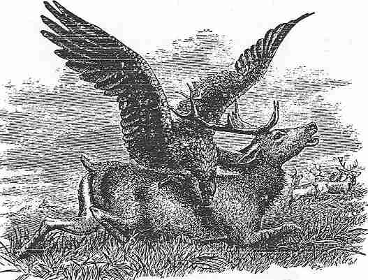
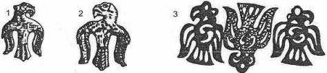
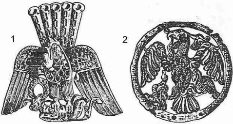

Reşideddin, Oğuz boylarının ongun'u olarak ancak bir kaç kuş adı vermiştir. Onlar da bazı av kuşu cinslerine verilen genel adlardır. Ebülgazi Bahadır Han, bu konuda daha geniş bilgi vermiş ve Orta Asya’daki av hayatı ile içtimai bağlantıları adeta canlandırmıştır. Bu kuşlardan bazılarını maalesef biz de tespit edemedik. Fakat birçoklarının Türkçe adlarını ve cinslerini bulmağa muvaffak olduğumuzu söyleyebiliriz. "Türkmen Şeceresi"ni ilk olarak Anadolu Türkçesine tercüme ederken, bu önemli bölümlerin Kononof'un yaptığı gibi açıklamasız geçmesine gönlümüz razı olmadı. Kuş adlarını incelerken izlediğimiz sıra, "Türkmen Şeceresi"ndeki boy sırasıdır.

Şekil 43: Geyik avlayan bir Orta Asya av kartalı (Bürküt) (Atkinson tarafından çizilmiştir).
Şunkar721 sözünün aslı Türkçe Songkur'dur. Bu kuşun adı, yine Türklerin tesiri ile Abbasîlerden sonra Arap kaynaklarında şungar ve şunkar olarak görülmeğe başlamıştır. "Araplarda av ve sporlar" adlı bir kitap yazan M. Mercier, Türkçe bilmemesine rağmen bu yabancı tesirlerin farkına varmıştı. Bu kuşa Anadolu’da genel olarak sungur adı verilir. Kırgızlarda ise şumkar sözü, doğan ve atmaca cinsinden bütün kuşlar için kullanılagelen bir ad olmuştur.722
Öyle anlaşılıyor ki songkur veya şunkar, doğan (Falco) cinsinden olan av kuşları için verilmiş umumî bir addır. Şâhin (Buteo) veya atmaca (Accipiter), songkur cinsinin dışında kalmaktadırlar. Sungur cinsi kuşlar, genel olarak doğan sözü ile değiştirilerek söylenir. Meselâ "ak-sungur, ak-doğan" gibi. Bu av kuşlarının cinsleri, Orta Asya’ya nazaran Anadolu'da daha iyi tespit edilmiştir. Rahmetli Ahmet Vefik Paşa'nın verdiği bilgileri, zoolojik terimlerle de tamamlayarak kendi sözlüğünde veren Redhouse'un "sungur" maddesini aşağıya aynen koyuyoruz:
"Songur/Sungur (Falco): Türkçede şungar derler. Ak-doğan = Ak-sungur (Falco gyrfalco).. Kara-sungur (Astur palumbarius), beneklisidir... Bay-sungur (Falco lanarius), bu pek büyük doğandır. Lâçin de derler".723
Şimdi de Ahmet Vefik Paşa'dan, Redhouse'la mukayese suretiyle Doğan maddesini okuyalım:
"Soylu kuş, doğışlu, necip.. şâhbâz, bâz. Akça tüylü ala-doğan (Falco peregrinus). Ak-doğan, sungur, ak-sungur (Falco gyrfalco),... beyaz doğan. Lâçin, bir nev'i tepeli ak-doğan. Üsküflü-doğan (Circus ceruginosus), bir nev'i kara-doğan. Delüce-doğan (Falco subbuteo), Çakır-doğan (Hypotriorchis aesalon), yani seyfi. Küçük çakır, cûre, sefîde... Boz-doğan = Bay-sungur (Falco lanarius). Koca başlu balaban-doğan (Astur palumbarius). Toy-doğanı (Chiquera falcon) veya (Hypotriorchis chiquera)''.724
Bununla beraber Redhouse, Anadolu'da doğan kelimesinin daha ziyade boz-doğan (Falco lanarius) için kullanıldığını ilâve etmiştir.
Kırgızlar da genel olarak sungur'a (Falco), şumkar derler. Küykö- şumkar bir nevi Türkistan sungurudur. Fakat cinsini bilemiyoruz. Kırgızlarda küykö, (Falco tinnunculus) cinsinden küçük doğanlar için ad olarak kullanılmıştır.725 Bu cins doğanlar çok küçüktür. Serçe v. s. yakalamak için kullanılırlardı. Anadolu'da doğan sözü genel olarak bozdoğan (= Bay-sungur) (Falco lanarius) için kullanılırdı. Bu doğan cinsi hem büyük ve hem de av kuşlarının en beceriklilerinden biridir. Yoksa Kayı boyunun ongun'u, serçe doğanlarından birisinin olması düşünülemezdi.
Türkler baykuşa genel olarak, ügi/ügü/ükü/ükkü adı verirler. Fakat baykuşun da birçok cinsleri vardır. Bu sözün aslı Türkçe olmasa gerektir. Kaşgarlı Mahmud, bu kuşun adını ühi şeklinde yazar.726 Kutadku-bilig'de bu kuşun adı ügi diye yazılmıştır. Kudatku-bilig'in bir nüshasında bu kuş adı ügi yazılmış iken727, öbür nüshasında da sarıg-kuş diye kaydedilmiştir.728 Bize göre bu ayrılık tesadüfen yapılmış bir yanlışlık olmasa gerektir. Sarıg-kuş, yani sarı kuş, baykuşların doğan türünden bir cinsi olmalıdır. Orta Asya’da baykuşa ügü de derler.729 Fakat bazı lehçelerde ükü sözü küçük türden baykuşlar için söylenmiştir. Normal baykuşlar için ise ükü-yapalak denmiştir.730 Av için kullanılanlar daha ziyade küçük cinsten baykuşlardır. Bu da bize gösteriyor ki, Bayat boyunun ongun'u normal baykuşlar değil, gece doğanlarıydı.
Altay lehçelerinde ükkü, "baykuş" anlamına gelir.731 Kırgızlar ise baykuş türünden kuşları büyüklüklerine göre sıralayarak, ayrı ayrı ad vermişlerdir. Ükü, "puhu kuşu", mıkıy-ükü, "baykuş", kırgıy-ükü ise, "atmaca baykuş" dur.732
Anadolu'da da, diğer Türk lehçelerinde olduğu gibi ügü, "büyük baykuş" (Bubo maximus), puhu kuşuna denmiştir.733 Aynı söz, yani ügü, Çağatay lehçesinde ise "puhu kuşu" anlamına gelirdi.734 Ahmet Vefik Paşa açıklama yaparken, "puhu'nun büyük nevi, yahut erkek puhu" der ki,735 bunun da (Bubo maximus) olması lâzımdır. Radlof her zaman olduğu gibi, bu konu da da yanlış bilgi vermiş ve bu kuşa Osmanlıcada öyü dendiğini yazmıştır.736 Asım Efendi Türkçe sözleri, her zaman için en orijinal telaffuzları ile yazmasını bilmiştir. Ona göre Ayıntap'da ügi adı verilen kuşa, Batı Anadolu'da puğu derlermiş.737 Aynı kuş için Çağatay lehçesinde738 ve Moğol lehçelerinde de birçok sözler vardır.739 Fakat bizim buradaki konumuz, "puhu" kuşunu incelemek değildir. Bu kadarcık da olsa açıklama yapmamızın sebebi, baykuş nevinden kuşları birbirinden ayırt etmek içindir.
Yukarıda yaptığımız açıklamalardan anlaşılıyor ki, Ebülgazi Bahadır Han'ın bahsettiği ügi kuşu, yırtıcı gece kuşlarından, baykuştan küçük "Atmaca-Baykuş"lardı.
Köykenek sözü, Kırgızca'da yine avcı bir kuş adı olan küykö’nün, küçültme eki ile yapılmış bir şekli olsa gerektir. Küykö (Kırg.), (Falco tinnunculus) cinsinden bir doğan nevidir.740 Radlof, Köykenek (Şor) için, Almanca "der Habicht" anlamını veriyor.741 Hâlbuki Almanca "der Habicht", bizim "atmaca", yani (Accipiter nisus) dur. Teleüt Türk lehçesinde ise, "büyük toy", yani (Otis tarda) anlamına gelir.
Köykenek kuş adı Çağatayca’da da vardır. Çağatay lehçesi ile ilgili sözlüklerden bir kısmı, bu kuşun kartal cinsinden bir kuş;742 bir kısmı da muymul adı verilen bir kuş olduğunu söylerler.743 Muymul/Buymul kuşu Anadolu'da da vardır. Redhouse'a göre Buymul, (Circus cyaenus) veya (C. ceruginosus) cinsinden bir kuştur.744 Muymul için de aynı şeyi söyler.745 Ahmet Vefik Paşa meseleyi daha başka bir yönden alır. Ona göre Muymul, "Terbiye kabul etmeyen bir doğan cinsidir". Çağatayca’da Köykenek derler. Kütahya'da Tavşancıla bağlı bir yer adıdır.746 Şeyh Süleyman Efendi, Muymul sözünü açıklarken, buna "Hayırsız doğan" dendiğini de ilâve eder.747 Kırım'da Küykenek adı verilen yırtıcı kuşun da, bu kuş cinsi ile ilgili olması muhtemeldir.748 Kırgızca’da Küyköntei adlı bir kuş daha vardır.749 Küyköntei sözünü gramer bakımından tahlil edecek olursak, anlamı, "doğanımsı, küykö adlı doğana benzer" demektir.
Görülüyor ki bu kuş, doğanın çok vahşi bir cinsidir. Türkler böyle vahşi ve yırtıcı hayvanlara daima önem vermişlerdi. Arada sırada terbiye edilen bu tip doğanlar, diğerlerine nazaran çok üstün özellikler gösterirlerdi. Orta boyda bir doğandır. (Falco tinnunculus) da olabilir. Fakat bu cins doğanlar küçüktür. Başları ve kanatları morumsu bir doğan cinsidir.
4. Kara-evli: Ebülgazi Bahadır Han, bu boyun kuşu, göbek-sarı kuşudur der. Maalesef mevcut imkânlarımıza göre, böyle bir kuşu tespit edemedik.
Metinlerde Turumtay/Turumtai şeklinde geçer. Türkçede turum, "tay"; torum ise "deve yavrusu" anlamına gelir. Bundan da anlaşılıyor ki, sözün orijinal şekli yine "torumtay" olmalı idi.
Kırgızlar ise yalnızca, (Falco vespertinus) cinsinden doğanlara turumtay derlerdi.750 Radlof da turumtay cinsinden olan atmacaların küçük olduklarını ilâve etmeği unutmamıştır.751 Öyle anlaşılıyor ki Kalmuklar da Türk halklarının tesirinde kalarak bu cins doğanlara aynı adı vermişlerdir.752 Kalmukların da Turumte dedikleri doğan cinsi, küçük ve Almanların "Neuntödter" dedikleri doğan türüdür. Ruslar bu tip doğanlara "kobçik" veya "kopçik" derler. (Falco apivorus) da denir. Bu küçük atmacaların birçok cinsleri vardır. Moğollar yırtıcı kuşların yalnızca erkeğine turumtai adını verirler.753 Fakat XVI. asırdan itibaren, belki de yine Türk tesiri ile bu nev'i atmacalara turumtai demişlerdir.754 Rusların (Falco apivorus) dedikleri atmaca nev'ini maalesef zooloji sözlüklerinde bulamadık. Buna rağmen, bu doğan cinsinin küçük türden bir kuş olduğu da gerçektir. (Falco vespertinus), mor kanatlı, mor başlı, küçük bir doğan cinsidir. Ayak ve bacakları kırmızıdır. Bilhassa akşamları yapılan avlara çok elverişli bir kuştur.

Şekil 44:
Altay Hun çağı Tuyahta ve Başadar Kurganlarında bulunmuş figürler.
Kaşgarlı Mahmud, karguy/kırguy/Karkuy/kırkuy adlı kuşun atmaca (Accipiter nisus) nevinden bir av kuşu olduğunu söylüyor.755 Çağatayca’da da Kırgu atmaca ve aynı zamanda serçe anlamına gelirdi. Şeyh Süleyman Efendi, bu kuşun karcıgay ile aynı olduğunu söylerse de, bu konuyu aşağıda münakaşa edeceğiz.756 Kırgız ve Teleüt lehçelerinde ise, kırgiy, çok iyi av yapan küçük bir atmaca cinsidir.757 Kırgızlar genel olarak küçük av kuşlarına kırgiy derlerdi.758 Kuzey Asya'daki Türk lehçelerinde, kırgayak adlı bir av kuşuna da rastlıyoruz.759 Bu söz de, kırguy/kırgay'ın küçültme eki ile yapılmış başka bir şekli olsa gerektir kırgayak kuşu için, "Falco apivorus" diye zoolojik bir terim de veriyor.
Bize kalırsa, bu kuş adının ve türünün en orijinal şeklini ve zoolojik tespitini yine Anadolu'da ve Osmanlıcada buluyoruz. Anadolu Türkçesinde kırgay760 ve kırgaw761, atmaca türünden (Accipiter nisus) bir kuştur.
Yukarıda verdiğimiz örnekler bize açık olarak gösteriyor ki kırgu, bir tür atmaca (Accipiter nisus) idi. Ruslar küçük doğanların tümüne "kobçik" (Falco apivorus) demişlerdir. Fakat bu küçük kuşları da birbirinden ayırmak bizim vazifemizdir.
Çağatay lehçesinde de karcıgay/karçıgay adlı bir av kuşu vardır. Şeyh Süleyman Efendi, bu kuşun hangisi olabileceğini anlayamamış, atmaca, doğan ve şahin cinsinden ne kadar kuş varsa hepsinin adlarını saymıştır.762 Radlof ise sözün manasını atmaca (Al. der Habicht) türü ile karşılamıştır.763 Çağatayca ile Kuzey Altay lehçelerinde bu kuşa karçıga da denir.764 Kırgızlar da hem karçıgay ve hem de karçıga derler. Kırgız lehçesinde de bu kuşun cinsi atmaca ( Accipiter nisus)'dır.765
Anadolu'da da karçıga/karçığu denen bir atmaca cinsi vardır.766 Dr. Rıza Pekün'ün söylediklerine göre, Doğu Türkistan'da tavşancıl gibi büyük kuşlara da bu adı verirlermiş. Raquettes ise Doğu Türkistan’da atmacaya karçıga dendiği yazmaktadır.767
Kuşların adlandırılması konusunda, tabii olarak her bölgeye göre bazı ayrılıklar meydana geliyor. Fakat sonuç olarak diyebiliriz ki, bu kuş da atmaca (Accipiter nisus) cinsinden bir kuştur. Yalnız Ebülgazi Bahadır Han bu kuşun renginin "kızıl" olduğunu da söylemektedir.768 Atmacanın kızıl renkte olanının bulunup bulunmadığını bilmiyoruz. Kızıl-şahin (Buteo rujinus) vardır. Görülüyor ki bu konularda, yüzde yüz gerçek sonuçlara varmanın imkânı yoktur.
Bu adı taşıyan bir kuşa, Orta Asya lehçelerinde pek rastlamıyoruz. Osmanlı Türkçesi ile ilgili kaynaklarda ise göçgen adlı bir kuş vardır. Bu sözlükler göçgen kuşunu, Arapça sûred kuşu ile karşılarlar.769 Arapçada sâred kuşu, (Parus major)dur.770 Ahmed Vefik Paşa, "Göçgen, yani boyun-buran kuşu" diyor ki, bu doğru olmasa gerektir.771 Çünkü, boyun-buran kuşu (Junx torquilla)dır.772 Bu sebeple Redhouse da göçgen kuşunu (Parus Major, ing. thc great titmouse) türünden saymıştır.773
Çağatay lehçesinde cure/çure genel olarak beyaz doğanlara verilen bir addır.774 Farsçadan Türkçeye girmiş bir kelimedir. Bu söz sıfat olarak Osmanlıcada da kullanılır.775 Ahmed Vefik Paşa, lâçin maddesinde şöyle diyor : "Beyazlı, kızıl ayaklı şahin. Yalçın, sarp ve şedîd manasından ak-şâhin'e isim olmuştur776". Yine rahmetli Paşa, sözlüğünün başka bir maddesinde, "Lâçin=Bay-sungur" diyor.777 Hâlbuki baysungur, (Falco lanarius)dur.778 Redhouse ise bu kuşun, yani lâçin'in, ( Falco peregrinus ) türünden gelen doğanların dişileri olduğunu yazar.779 Lâçin sözü Kuzey Altay'daki Türk lehçelerinde de doğan (Falco, Al. der Falke) anlamına gelir.780 Doğu Türkistan'da ise lâçin vahşi ve küçük doğanlara verilen bir addır.781 Lâçin sözü, Moğolcaya naçin şeklinde girmiş ve yine doğan için kullanılmıştır.782
Osmanlı kaynaklan lâçin'in ak-şahin olduğunu açık olarak söylemektedirler. Buna rağmen Redhouse'un bu kuşa (Falco peregrinus) demesi biraz karanlık gibi görünüyor. Çünkü bu cins doğanların başı ve kanatları açık mor renktedir. Üzerinde küçük kahverengi benekler bulunan beyaz doğanlar ise, daha ziyade (Falco gyrfalco) türünden olan doğanlardır.
Kononof, öbür boyların kuşları hakkında hiç bir fikir ileri sürmediği halde, notunda bu kuş hakkında bazı şeyler söylemiştir. "Türkmen Şeceresi"nin başka bir yerinde de bu kuşun adı geçmektedir.783 Arsari Bey'in nesilleri sarıça/sarıçı kuşundan altı tane istemişlerdir. Kononov'a göre bu kuş, (Buteo) türünden bir av kartalı olmalıdır.784 Kırgız lehçesinde de caman-sarı adlı bir kuş vardır ve bu da (Archi-buteo) türündendir.785 Yukarıda da söylediğimiz gibi Prof. R. R. Arat'ın yayınına esas olan Kutadgu-bilig nüshasında ügi şeklinde geçen bir kuş adı786, Radlof’un nüshasında sarıg-kuş olarak geçmektedir.787 Tabii olarak bu sarı kuşun, bizim burada konumuzu teşkil eden sarıça ile bir ilgisi olup olmadığını tespit edebilecek durumda değiliz.
Osmanlıcada da sarı-doğan adlı bir av kuşu vardır. Bu kuş da (Hypotriorchis subbuteo) türündendir.788 Görülüyor ki, bu da (Buteo) türünün içindedir. (Buteo) türündeki yırtıcı kuşlar için bizim zoologlar genel olarak şahin derler. Bu şahinlerin, kızılla sarı karışımı bir cinsi vardır ki, buna da (Buteo rufinus) derler.
Orta Asya ile ilgili sözlüklerde böyle bir kuşa rastlamıyoruz. Ahmed Vefik Paşa, "Tüylü bahrî = Deniz doğanı" diyor.789 Osmanlı kaynakları bahrî kuşunu, daha ziyade (Pandion haliaetus) olarak kabul ederler.790 Bu bir nevi, gerçek deniz doğanıdır. Nehirlerde de bulunur. Türkler, deniz ördeği ‘ne de bahri derler ki, bunu deniz doğanı ile karıştırmamak lâzımdır.791 Bu da, (Spatula clypeata) türünden bir kuştur.792
Bürküt, Orta Asya’da genel olarak büyük kartallara verilen bir addır, öyle anlaşılıyor ki bu da, yukarıda adı geçen bahrî, yani deniz veya nehir doğanının daha büyük bir cinsidir.
Toğanak, toğan'ın bir küçültmesi olmalıdır. Şeyh Süleyman Efendi, "Toğan = Ötlegü"der.793 Hâlbuki ötlegü, büyük bir kaya kartalıdır. Yine aynı yazar, Toğanak için ise, "Şâhbâza benzer bir av kuşudur" der.794 Bu, daha makuldür. Radlof ise, Toğan/Doğan için, sözün normal karşılığı olan doğan (Falco, Al. der Falke) manasını koymuştur.795 Ala-doğan veya alaca-doğan Anadolu'da genel olarak, (Falco peregrinus) için kullanılır.796 Bu, (Tinnunculus alaudaris) türünden olan kuşlar için de söylenen bir terimdir. Fakat burada bizi ilgilendirenler, daha ziyade birinci türden olan kuşlardır. Toğanak sözünde bir küçültme yapıldığına göre bu kuşun, (F. peregrinus)'ndan da küçük ve doğanla şahin arasında (Falco subbuteo) olması, daha muhtemeldir.
Öyle anlaşılıyor ki bu kuş, kartal türünün en büyüğü ve kartalların en yırtıcısıdır. Yudahin yalnızca, "Büyük, yırtıcı kuş" demektedir.797 Hâlbuki bir Kırgız atasözü, bu kuş hakkında bizi yeter derecede aydınlatmaktadır.798 Bu atasözü şöyledir : "Kuş törüsü buudayık, it törüsü kumayık". Yani, kuşların reisi buudayık kuşu, köpeklerin reisi de ku- mayık'dır. Çağatayca ve Özbekçedeki bugdayık, Kırgızcada ise buudayık olmuştur.
Kartalların en büyüğü, şah-kartal (Aquila heliaca)dır. Orta Asya'da bu büyük kartalların birçok tipleri vardır. Bir gerçek varsa, o da en büyük kartalın, Çavuldur boyuna ait bir ongun olduğudur.
Bu kuşun adı, efsanevî Hümâ/Hümây kuşunun adından gelir. Bununla beraber bu ad, bugün yaşayan kuşlara da verilmiştir. Meselâ huma veya hüma, Kırım'da en iyi cins kartallardan birine verilen bir addır.799 Bu kuşun adı, Kırgız lehçesinde kumay olmuştur. Kırgızlar, (Vulturidae) türünün en büyük cinsine kumay derler.800 Bu, akbaba cinsinden, kar-kuşu da denilen büyük bir kartaldır.
Orta Asya’da kartalın umumi adı bürküt'dür. Bürküt'ün de birçok nevileri vardır. Meselâ Yudahin Kırgızların tanıdığı bir kaç bürküt cinsi yazmıştır. Ebülgazi Bahadır Han, bürküt'ün başına bir sıfat yazmamıştır. Belki de onun çağında, yalnızca bürküt sözü belirli bir kartal cinsini ifade ediyordu.
olan kuşun adı maalesef tespit edilememiştir. "Türkmen Şeceresi"nin muhtelif nüshalarının hemen hemen hepsinde ayrı yazılmıştır. Kitabı istinsah eden yazıcılar eğer bu kuşun adını doğru olarak bilselerdi, aralarında bu kadar büyük bir ayrılık olmayacaktı. Nüshalardaki yazılışlar şöyledir: Encari, anhazi, ancabi, ancaz, ancanı, v. s.

Şekil 45: Efsanevi Sibirya ve Macar arma kartalları
Bu boyun Ongun’u olan kuş, yagılbay kuşudur. Şeyh Süleyman Efendi bu kuştan, yalnızca "bir av kuşudur" deyip, geçmektedir. Radlof ise bu kuş adını yağilbai ve yağlabai olmak üzere, iki şekilde okumaktadır. Bize göre Radlof'un ikinci okuyuşu yanlış olsa gerektir. Yine Süleyman Efendi, karçığay kuşundan da bahsederken, bu kuşun cağılbay kuşu ile aynı olduğunu söyler. Moğolcada cagalmai ve Kalmukçadaki zagalmä, "siyah kartal" için kullanılan tanınmış deyimlerdir. Moğolcada cagal, Kalm. zagal, "atların boynunun iki yanındaki saçlar, atın göğsündeki kıl saçakları veyahut da köpeklerin boynundaki açık renkte çizgiler" için kullanılan bir sözdür. Mongolistlerin bütün çabalarına rağmen, buna Türkçe sakal sözünden başka bir kök aramak, boşuna bir emek olacaktır.
Kore'de mai sözünün ve Türkçede bay'ın eski çağlarda av kuşları için kullanılan umumî bir ad olması çok muhtemeldir. Bay-kara, v. s. gibi kuş adları da bu sözle ilgilidir.
Bu sebeple Türkçedeki bu kuş adının yağıl-bai/yağıl-bay, Moğolca sözün ise cagal-mai şeklinde bir ayrıntıya tabi tutulması lâzımdır. Yağıl sözünü de, Çağatayca’daki yağıl-mak (yağı’dan) fiili ile mukayese etmemiz gereklidir. Bize göre bu kuş adının menşei, iddia edildiği gibi Moğolca değil; yine Türkçe kökler ve kaidelerdir.801
Ebülgazi’ye göre bigu veya beygu adlı bir kuştur. Çağatay lehçesi ile ilgili sözlüklerde de bulduğumuz bu sözü, Selçukluların ilk beylerinden birinin adı olarak da görüyoruz. Sözün türeyişi biraz karanlıktır. Belki de kırgu, turgu kuş adları gibi (< ? bay-gu veya bay-ı-gu)dan geliyordu.802
Yukarıda yazdığımız gibi, Dodurga boyunun ongun'u kızıl-kar-çıgay idi. Burada ise yalnızca karçıgay söz konusudur. Türk lehçelerinde karçıgay sözünün değişik şekillerini de Dodurga boyu ile ilgili bölümümüzde incelemiştik. Karçıgay/Karçıgai adı, genel olarak güvercin avlayan orta boy doğanlara verilen addır. Kırgızlarda ise Karçığa sözü bütün atmaca, doğan ve şahinlere verilen umumî bir addır.803 Yukarıda da söylediğimiz gibi bu kuşun, güvercin doğanı olması çok muhtemeldir.
Kononov, Oğuz boylarının ongunlarından bahseden bölümlerde bu kuşun adını itelgü şeklinde yazmıştır. "Türkmen Şeceresi"nin sonlarına doğru yine aynı kuşun adı geçmiş ve bu defa da sözü it-algu diye anlamış ve öylece transkripsiyonunu yapmıştır.804 İt-algu, "köpek kapan" demektir. Az sonra göstereceğimiz gibi Anadolu'da ötlegü adlı kartala, aynı zamanda uşak-kapan da derler. Bununla beraber Çağatay lehçesinde ve Doğu Türkistan'da da büyük bir av kuşuna itelgü veya itelgi derler.805 Şeyh Süleyman Efendi'ye göre bu kuş, orta boy doğanlardan biridir.806 Bu fikir yanlış olsa gerektir. Ayrıca Çağatay lehçesinde ötelgü adlı bir av kartalı da vardır ki, buna kuzu-kartalı da derler.807
Anadolu'da ötlegü/ötlegi adı verilen kuş için Ahmed Vefik Paşa şöyle diyor : "Havada çok devir yapan, bir nevi kerkes kuşu: Uşak-kapan808". Redhouse'a göre ötlegü, (Aquila chrysaetos), yani kaya kartalı veya altın kartaldır.809 Gerçekten bu cins kartal havada dönüp avını ararken, bir takım sesler çıkararak, devamlı bir surette öter.
Çağatay lehçesi ile ilgili sözlükler, toygun adlı av kuşunu, toygar la karıştırırlar.810 Hâlbuki toygar, "çayır kuşu, turgay" ve bazen da serçe anlamına gelir.811 Anadolu'da da toygan adlı bir kuş vardır ki, bunu da toygun ile karıştırmak doğru değildir. Toygan da serçe gibi küçük bir kuştur.812 Toy-doğan ise ayrı bir kuştur. Bu da bir doğan cinsidir. Fakat menşei Hindistan olan ve zoologların (Chiquera falcon) dedikleri bir türdür.813 İşte bütün bu benzerlikler, sözlük yazanları şaşırtmış ve küçük kuşlarla, yırtıcı av kuşlarını birbirine karıştırmıştır.
Bu kuş hakkında en sağlam bilgiyi yine Kırgız sözlüğü ile Osmanlı kaynaklarında bulabiliyoruz. Yudahin, Kırgızların tuygun dedikleri av kuşunun beyaz atmaca olduğunu söylüyor. Yudahin'in "Kırgız Sözlüğü" nü Türkçeye tercüme eden B. Abdullah Taymas ise buna, (Astur Palumbarius) zoolojik terimini ilâve ediyor.814 Asım Efendi, toygun'un bir av kuşu olduğunu, buna tuğrul da dendiğini söylüyor.815 Toygun kuşunun Farsçası tuğra’dır. Osmanlı kaynakları da toygun''u (Astur palumbarius) cinsinden bir av kuşu olarak kabul ederler.816 Unutmayalım ki bay-sungur da aynı kaynaklara göre, bu cins bir kuş olarak sayılmıştı.817
Açık renkli, güvercin avlayan bir atmaca nevidir.818 Bu tür atmacaları yukarıda incelemiştik.